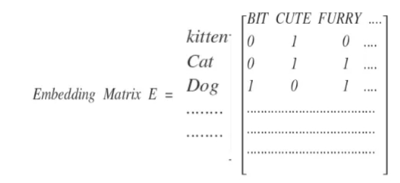
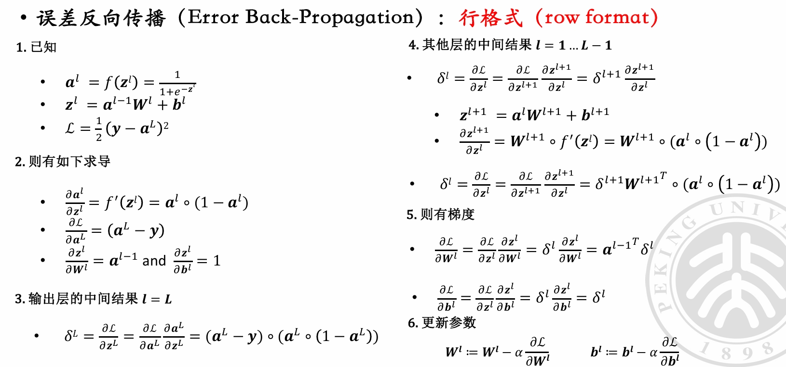
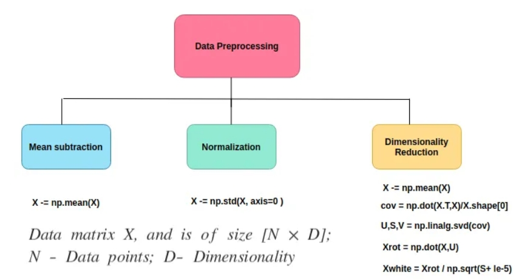
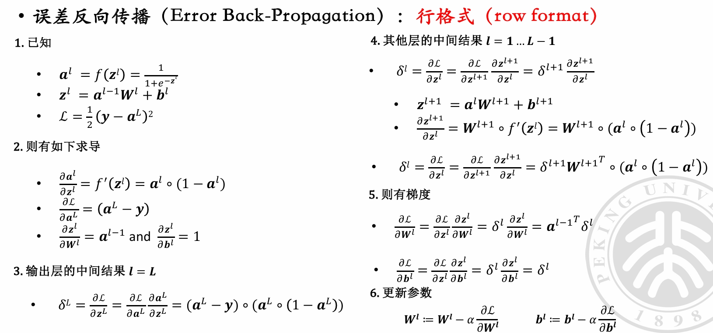
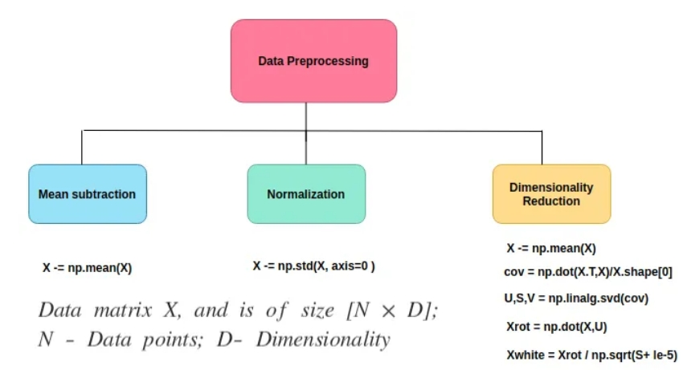
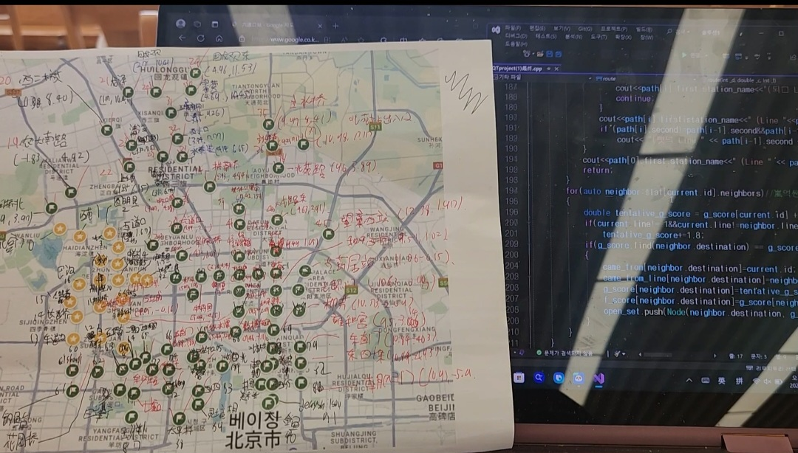
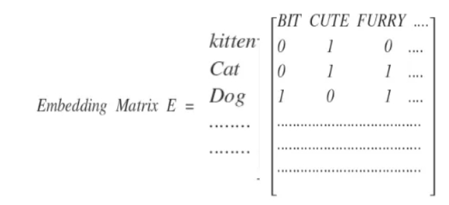
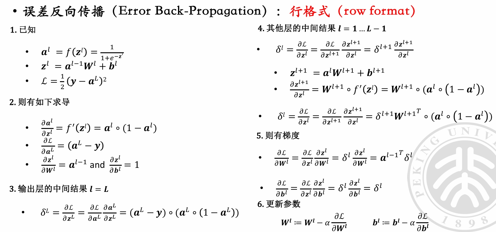
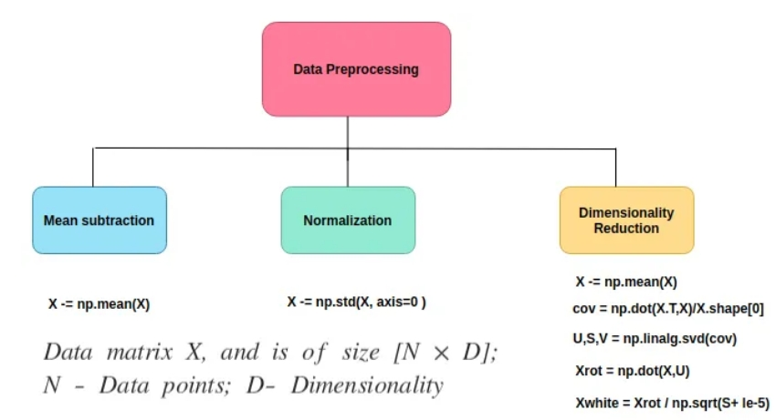

저는 머신러닝과 딥러닝을 공부하면서 수학전공수업에서 배운 미적분 지식들이 경사 하강법과 역전파,함수최적화과정과확률밀도 함수 등과 연계되고 선형회귀,주성분 분석,신경망을 사용한 알고리즘에 선형대수의 매트릭스 계산과 운용이 연계되는 것에 강한 흥미를 느끼고 있습니다.사진은 훈련과정에서 선형대수의 사용, 경사하강법에서 미분의 사용,numpy배열에 의한 데이터 전처리입니다.
 



저는 컴퓨터공학과 중에서 인공지능 전공에 속해있습니다.지금까지 학교에서 인공지능을 설계하는데에 필요한 기초지식들을 배워왔습니다.처음에는 코딩과 프로그래밍 언어 C/C++를 배웠고,그걸 응용한 class를 이용한 Object-Oriented Programming, STL등을 배웠습니다 그 후에는 자료구조와 함께 알고리즘을 배웠습니다.동시에,AI기술의 원리를 이해하고 응용하는데 관건적인 역할을 하는 수학을 배웠고, python,pytorch,tensorflow,sklearn등을 통해 머신러닝과 딥러닝을 공부했습니다.
C/C++는 프로그래밍 언어 중 가장 널리 사용되고 기본이되는 언어입니다.프로그래밍 입문에 필수적인 코스이고,운영처리나 언어처리계에 적합한 언어입니다.메모리에 대한 기본 수준의 액세스를 제공하며, 런타임 지원이 거의 필요 없어 효율적으로 작동하는 프로그래밍 언어이기에, 리소스가 부족한 기계에서 작동할 때 유용하다는 특성이 있습니다.학교에서도 컴퓨터공학과 학생들에게 1학년 1학기에 C언어를 가르칩니다.C++는 C 언어를 기반으로 하지만, 속도나 효율성 저하 없이 C 언어를 개선함과 동시에 객체 지향 프로그래밍(object-oriented programming) 기능을 추가했습니다.컴퓨터공학과 학생들이 1학년 2학기에 접하고 알고리즘을 배웁니다.
알고리즘은 컴퓨터를 통한 문제 해결의 절차와 방식으로 많은 종류가 있습니다.저 역시 학교와 책들을 통해서 정렬, 재귀, 탐색(DFS,BFS), 트리,이분법, 그리디,동적계획 등 다양한 알고리즘을 공부했습니다.알고리즘을 통한 사고방식은 프로그래밍에서 마주하게되는 복잡한 문제들에게 해결책을 제시합니다. 사진은 북경 길찾기 프로그램을 만들 때 찍은 사진입니다.북경에 있는 시작지점과 도착지점을 입력하면 가장 짧은 경로와 최소환승 경로를 반환합니다.이 프로그램에서는 a*알고리즘을 사용해서 최소경로 문제를 해결했습니다.알고리즘을 이용하는 과정에서 환승역과 이웃역사이의 거리, 통일된 단위에 의거한 북경 범위에 존재하는 역들의 상대좌표과 필요했기 때문에 수작업과 알고리즘이 모두 필요했습니다.그러나 이런 최단 길찾기 류의 문제들은 다익스트라 알고리즘이나 벨먼-포드 알고리즘 등을 통해서도 실현가능합니다.
저는 머신러닝과 딥러닝을 공부하면서 수학전공수업에서 배운 미적분 지식들이 경사 하강법과 역전파,함수최적화과정과확률밀도 함수 등과 연계되고 선형회귀,주성분 분석,신경망을 사용한 알고리즘에 선형대수의 매트릭스 계산과 운용이 연계되는 것에 강한 흥미를 느끼고 있습니다.사진은 훈련과정에서 선형대수의 사용, 경사하강법에서 미분의 사용,numpy배열에 의한 데이터 전처리입니다.


